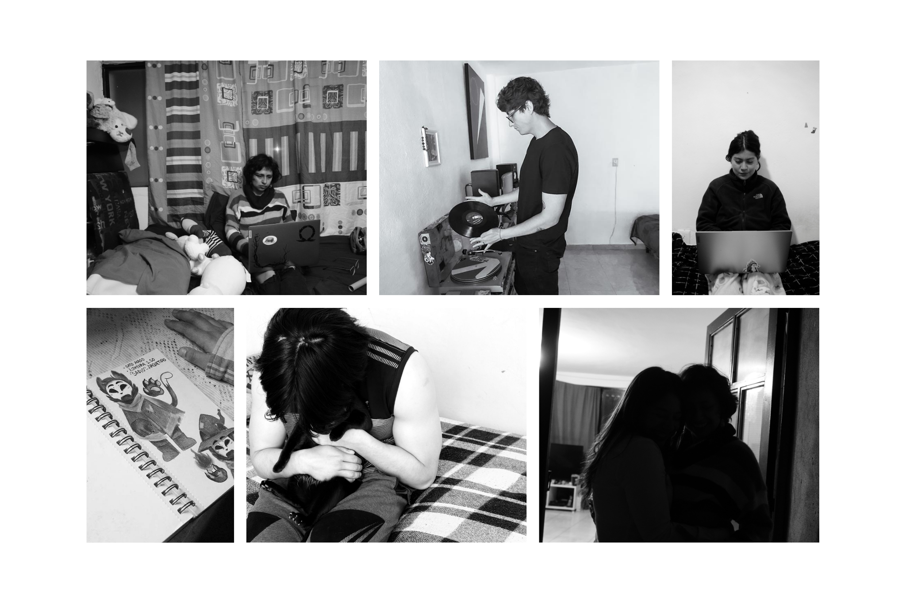

005 Habitar el espacio
Habitar el espacio, es un trabajo colaborativo con los artistas, Emilio Bodet, Regina Ortega. Nacido de la idea de generar un archivo fotográfico, Habita el espacio se convierte en un espacio de reflexión sobre la relación entre imagen, lenguaje y experiencia personal.

El proyecto busca documentar y visibilizar estas formas cotidianas de habitar el espacio, registrando como los estudiantes foráneos transforman habitaciones transitorias en lugares cargados de significado personal y de nuevos recuerdos que irán o que van formando a lo largo de su paso por ese espacio que poco a poco van transformando como un espacio propio que les va a permitir crear una nueva experiencia y una nueva manera de desarrollarse en este tiempo que pasen lejos de lo que inicialmente fue su verdadero hogar y este nuevo espacio llega a convertirse en su nuevo espacio para habitar.
Este proyecto se compone de una seríe de fotografías, material sonoro y de video, estructurado mediante lenguaje de programación web (HTML, CSS, JS), donde el archivo fotográfico se convierte en una habitación íntima más, que alberga la vida de los estudiantes de la Universidad Autónoma Metropolitana Unidad Lerma